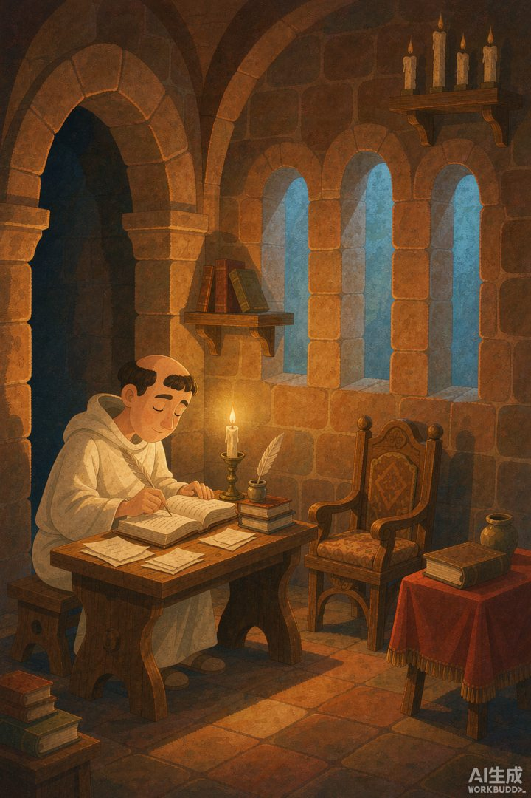
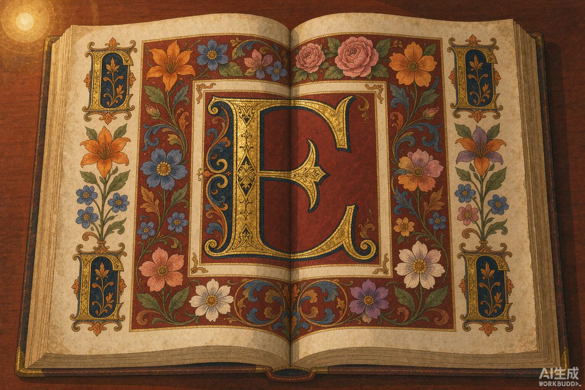
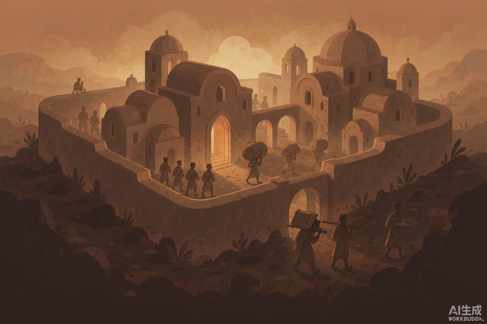

|
信息传播那些事儿 · 卷二「竹简与封泥」· 第 29 篇 |
|
修道院抄本 —— 修士才是欧洲最早的编辑，抄错还要罚抄 |

▲ 中世纪缮写室里的修士，一盏灯、一支笔，就是一台「人肉印刷机」（AI 生成示意图）
|
中国这边，书籍靠雕版和活字批量印；欧洲中世纪的前几百年，没有印刷术，一本书就是一个人用几年时间，一笔一划「写」出来的。干这活的，是修道院里的修士。 |
西罗马帝国一垮，欧洲跌进所谓的「黑暗时代」。城市毁了，图书馆烧了，会读书的人所剩无几。文明的火种眼看要灭，是谁接住了？是修道院。
六世纪，努西亚的本笃创立本笃会，定下会规：祈祷与劳动并重（Ora et Labora）。在诸多劳动里，「抄写书籍」被抬到神圣位置——不是苦差，是修行。会规里甚至写：「懒惰是灵魂的敌人。」所以修士不抄书的时候，就得去读书、抄经。抄写室（scriptorium），成了中世纪的「知识工厂」。
一 | 修士才是欧洲最早的编辑 |
缮写室通常是修道院里最亮、最暖的房间，挨着厨房取暖气。里头规矩极严：沉默是铁律。修士各坐一个小隔间，先拿铅尖在羊皮纸上打格，再用鹅毛笔蘸铁胆墨水，一个字母一个字母地抄。
抄完不是完事，得有另一位修士校对，用小刀刮掉错字重描。抄错要罚——轻则重抄，重则禁食。所以手抄时代的质量，全靠人力兜底：一个人认真，书就准；一群人认真，文明就传下来了。后来的学者在书页边角发现修士的吐槽，有人写：「我终于抄完了，看在基督份上，给我喝一杯吧。」

▲ 泥金装饰手抄本：金箔首字母加彩绘花边，书本身就是艺术品（AI 生成示意图）
二 | 黑暗时代的诺亚方舟 |
修士抄的不只是《圣经》。他们顺手把维吉尔、西塞罗、柏拉图的异教经典也抄了——只要语言和历史有价值，就留着。正是这道「无意间的护持」，让无数古希腊罗马文献穿过中世纪，到文艺复兴时重见天日。
代价是惊人的慢。抄一部《圣经》往往要一位修士花近一年；著名的《林迪斯法恩福音书》用了约一百三十张小牛皮，耗时五年。装帧讲究的叫「泥金装饰手抄本」，贴真金箔，是价值连城的艺术品，也是圣物。这么金贵，自然得锁起来、拴起来防偷——所以中世纪的《圣经》常「被铁链拴在桌上」，那不是怕人读，是怕人偷。

▲ 战乱中，修道院成了保存古典文明的孤独方舟（AI 生成示意图）
📌 本篇数字锚点 | ||||||||||
|
所以别小看「手抄」二字。在没有印刷术的欧洲，是这群沉默的修士，用一辈子的弯腰，把人类的记忆一笔一划续上了。可手抄终究慢、贵、易错，撑不起一个帝国对情报的贪婪。东边有个政权，偏偏把「信息网」做到了古代世界的巅峰——蒙古人用金牌信使，把驿站铺到了欧亚大陆的尽头。下一篇，看蒙古驿站。
|
🔔 下篇预告 · 第 30 篇《拜占庭情报网》—— 「外交邮包」里塞满谍报，国家情报是媒体的黑暗孪生 |
史料转引自本笃会规、修道院缮写室相关研究及泥金装饰手抄本史料；配图为 AI 生成示意图。